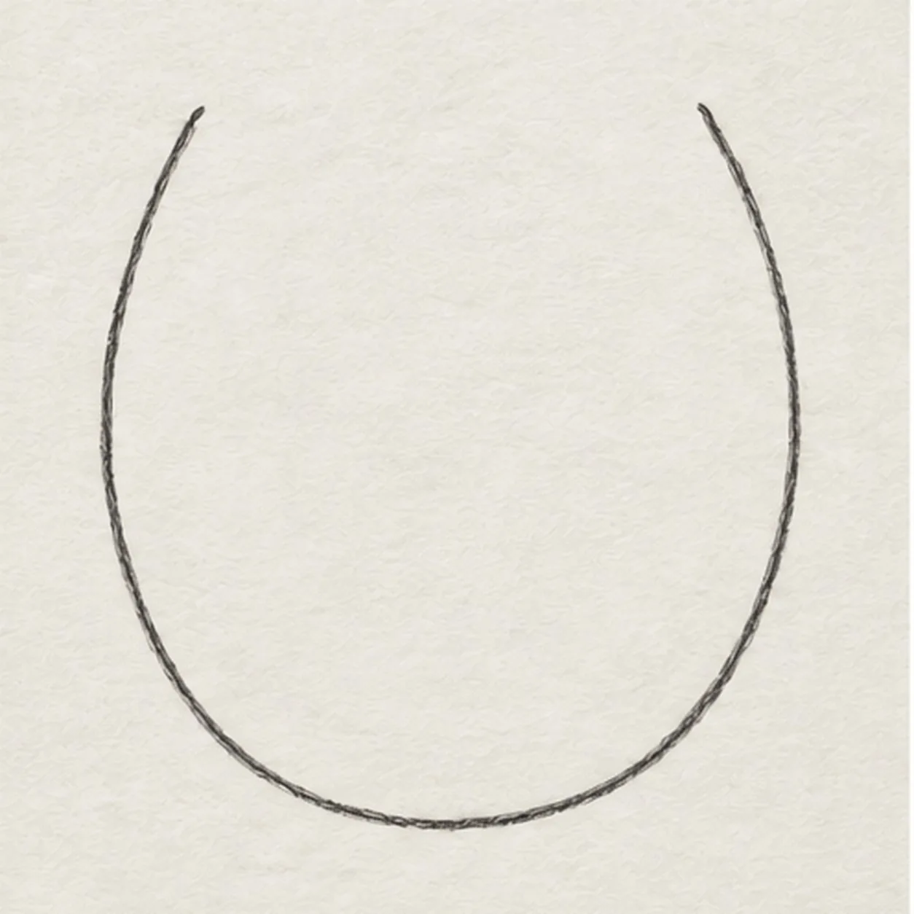
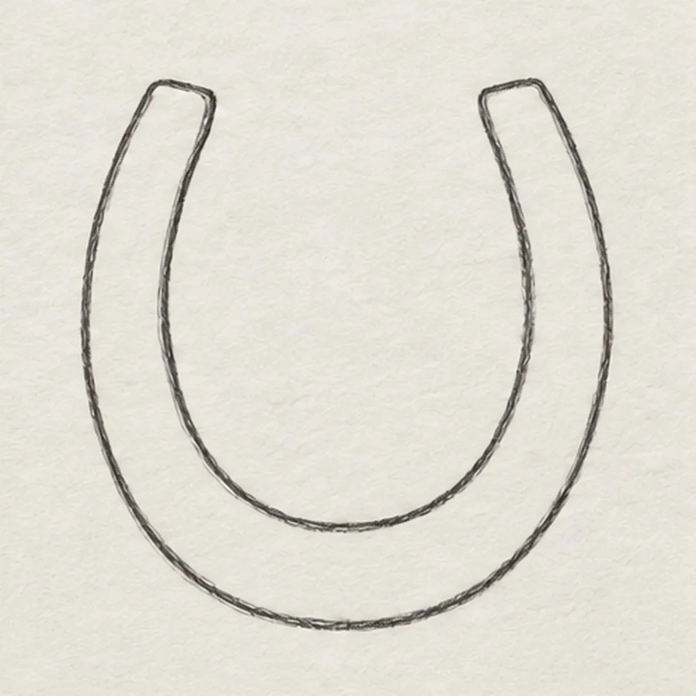
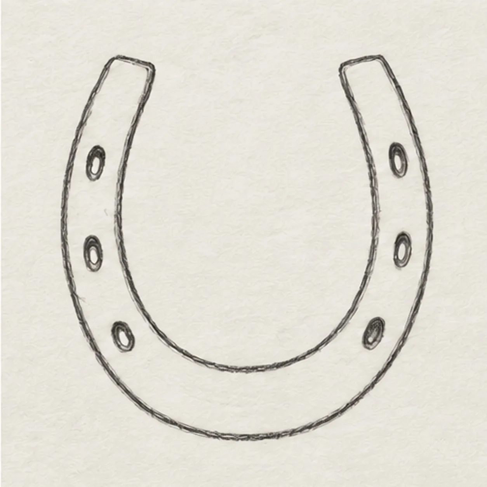
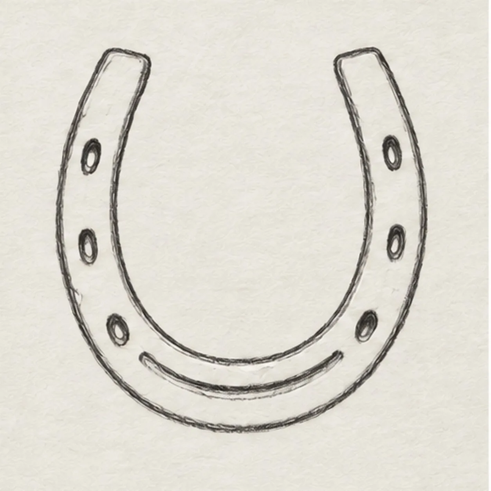
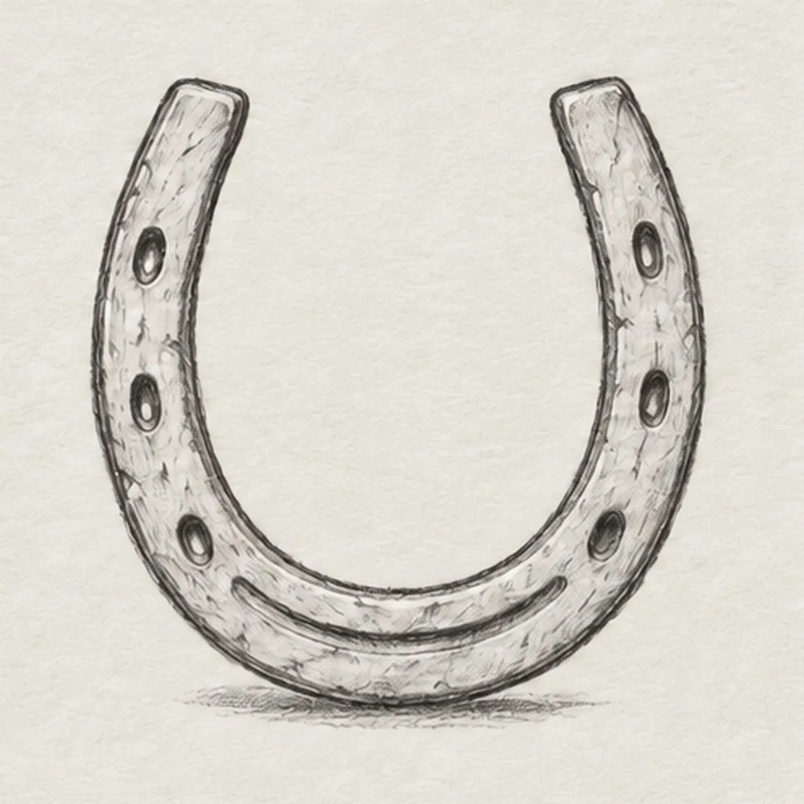

Pencil ready?
Let's draw a horseshoe
Treat this as one small practice round: build the subject lightly, notice the shapes, then darken only the lines that help the finished sketch.
-
01

Draw the outer U
Place two open tips at the same height, then curve down the left arm, around a broad bottom toe, and back up the right arm. Keep the center completely open.
Sketch tip: Keep the two outer ends level and leave enough room inside for the parallel curve.
-
02

Give the iron thickness
Inside the first U, follow its curve with a second U about a finger-width away. Stop at the two upper ends and close each blunt end with a short line so the iron reads as one solid band.
Sketch tip: Use the outer edge as a spacing guide; the band should feel similar in width along both arms and toe.
-
03

Place six nail holes
Draw three small oval nail holes along the left arm and three matching ovals along the right. Space them evenly and keep every hole fully inside the band.
Sketch tip: Mark all six positions lightly first, then turn each into a small oval before darkening any rim.
-
04

Mark the toe groove
Around the bottom inside of the U, add one shallow curved groove that follows the toe without touching the nail holes. Leave both end faces and all six holes unchanged.
Sketch tip: Keep the groove low and centered so it does not become a smile floating in the open middle.
-
05

Show the worn surface
Place a few short uneven hatches on the outside of the iron band, then sketch a broken horizontal shadow directly below the rounded toe. Keep the openings clear.
Sketch tip: Break the shadow beneath the toe and stop the hatches before they obscure the six holes.
-
06

Shade the old iron
Layer cool gray lightly across the existing band, deepen selected graphite edges and six hole rims, and place a few warm-brown touches on the established wear hatches. Leave narrow paper highlights along the iron; do not change the U shape.
Sketch tip: Use the side of the colored pencil so the paper grain and six dark hole rims remain visible.